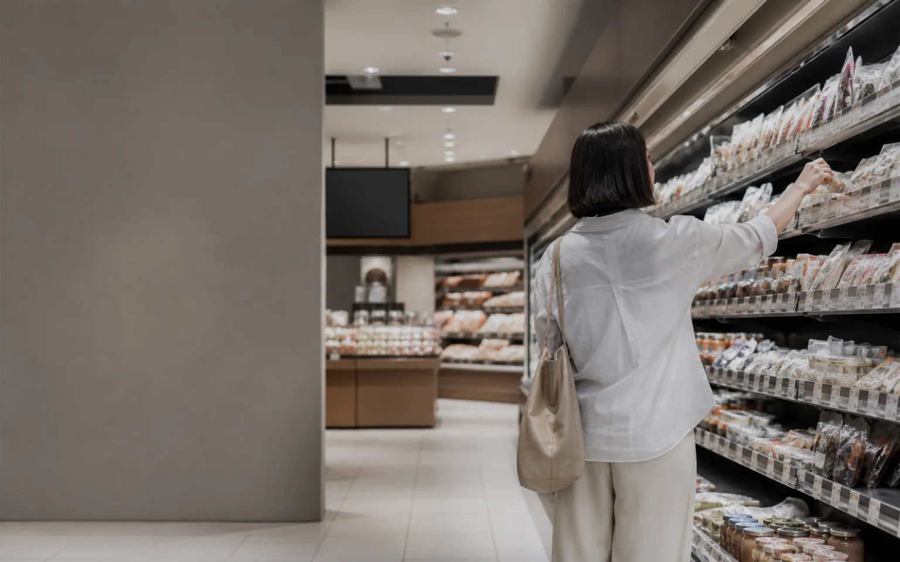

Ad
地域の生活者へ、店頭から届ける。
小売店舗のデジタルサイネージを活用し、商圏の生活者へ繰り返しメッセージを届けます。
広告主向けページへ →店頭で生活者に「届ける」広告と、選ばれた理由を「知る」インサイト。Malzは二つの接点を、次の施策につなげます。

Malzとは
日常的に訪れる小売店舗には、商品を知り、比べ、選び、買うまでの行動が凝縮されています。Malzは、そのリアルな接点を広告と調査の両面から活用し、メーカー・広告代理店・小売店のマーケティングを前へ進めます。
買い物という日常行動の中に、自然な広告接点をつくります。
商圏や店舗ごとの文脈に合わせて、施策を設計します。
認知や購入理由を知り、商品と施策の改善につなげます。
2つのサービス
目的に合わせて単独でも、広告と調査を組み合わせても活用できます。
小売店舗のデジタルサイネージを活用し、商圏の生活者へ繰り返しメッセージを届けます。
広告主向けページへ →アンケートとリワードで、購買データだけでは分からない認知・比較・購入理由を集めます。
メーカー向けページへ →広告出稿、媒体連携、共同検証など、まずは目的をお聞かせください。
お問い合わせ